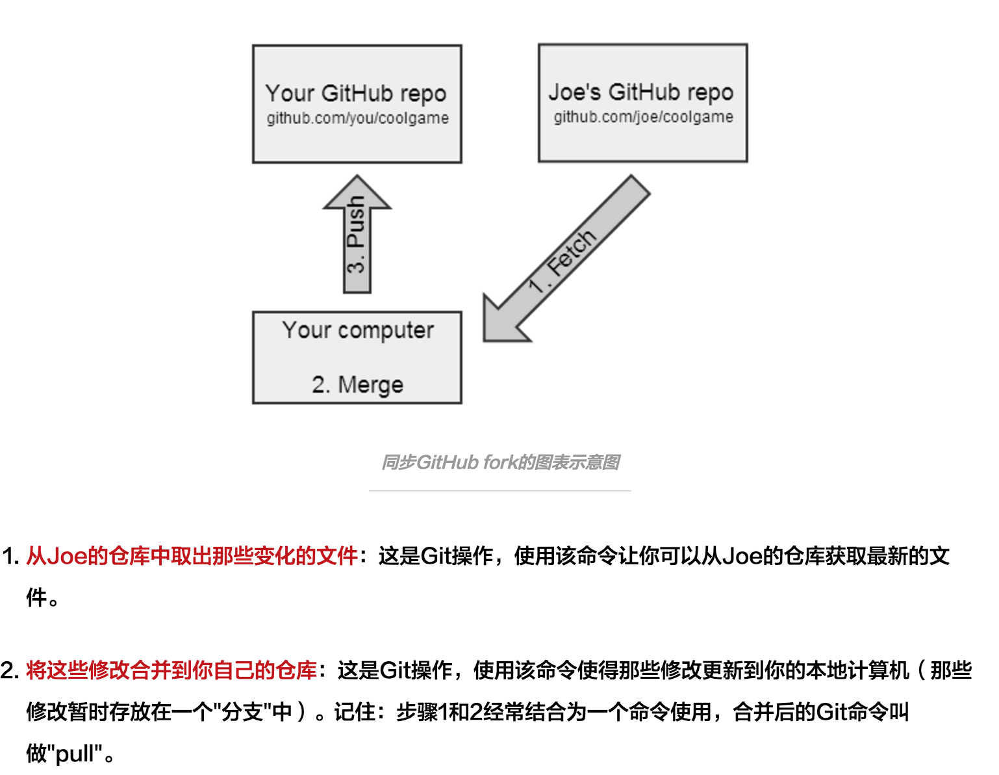
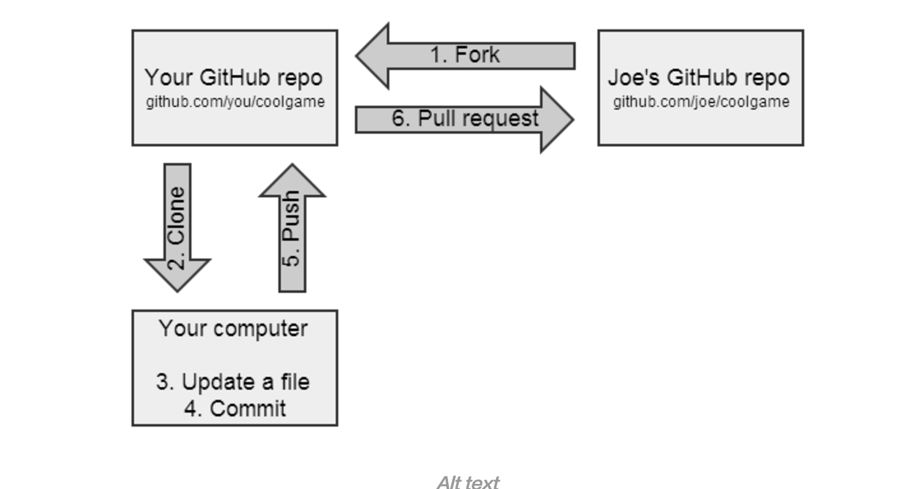

git分为四个部分：
- 本地的文件：我们可以看到并操作的文件
- 本地git
- 缓冲区：记录修改的记录
- 远程git
建立本地仓库—>修改本地文件—>commit到本地git—>sync到远程git

commit: 提交到本地git仓库
sync(push): 同步到远端git仓库
pull request(pr): 将自己的分支merge到另一个分支
fork: 复制别人的仓库并创建一个branch(分支)
pull: 将你fork的仓库中的同步到本地git中
clone: 将自己远端git的项目(fork或自己建的)复制到本地git上

注意：
- commit 之后要sync
- 多人共同修改某个项目，为了避免冲突，最好先pull，同步一下最新的版本再提交自己的代码
在实际项目中，一般常用的git 操作一般为：
- git clone: 克隆一个仓库
- git branch: 查看本地分支
- git branch -a: 查看所有分支，本地和远程
- git fetch: 取回所有分支的更新
- git branch –set-upstream-to=origin/dev dev: 将
- git branch -d 本地分支：删除本地分支
- git difftool 分支1 分支2：用ksdiff查看diff
git stash: 暂存不提交本地的改变
git checkout -b 本地分支:新建一个本地分支并切换
- git commit -a -m ‘fix bugs’
- git push 远程主机名 本地分支: refs/for/远程分支名(百度内refs/for表示评审)
- git push -u 远程主机名 本地分支 ：-u 建立追踪关系，以后只要git push 就行
- git 的暂存区只有一个，也就是我们平时看到的文件，它里面的内容是新添加的文件+当前分支的文件，也就是说，当我们改动某个文件时，切换分支时会提示让你提交，否则切换分支后暂存区内容就变了，但是当我们添加一个文件时，切换分支后该文件 还在。